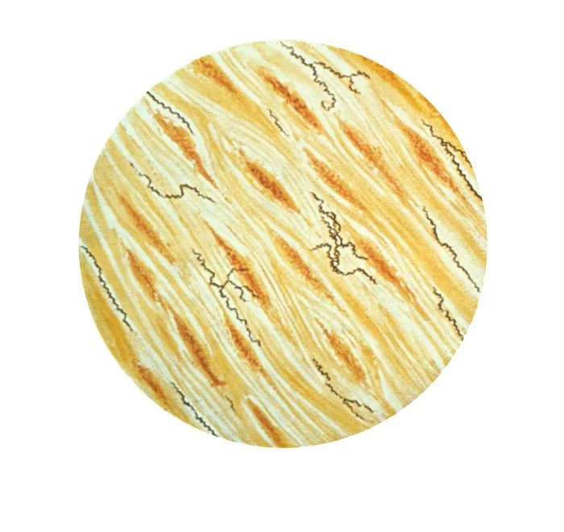
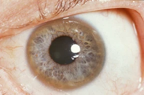

Three hundred names, no test
There is no blood test for depression. No brain scan diagnoses ADHD, no gene confirms autism, and nowhere in psychiatry is there a number you can measure in a person and say, that is the disease. The book that defines all of them lists about three hundred conditions and contains not one lab value.
The book is the DSM, the Diagnostic and Statistical Manual of Mental Disorders, published by the American Psychiatric Association and now in its fifth edition. It is the field's catalog of what can go wrong with a mind, and the closest thing it has to a dictionary. Every diagnosis in it, the ones you have heard of and the ones you have not, is a checklist: a list of symptoms, a count you have to reach, and a clinician deciding whether you cross the line.
In the rest of medicine you can usually prove it. A tumor shows up on a biopsy. An infection grows in a dish. Diabetes is a number on a glucose meter, high blood pressure is a number on a cuff. Psychiatry has none of that. It has descriptions, written by committee and revised every couple of decades, of how people behave when they are suffering.
There is one near-exception, and it makes the rule sharper. In 2013 the FDA cleared a device that reads brain waves to help assess ADHD, but only as an aid to a doctor who has already done the full workup; it is not allowed to make the call on its own. FDA, 2013 And in 2025 the first blood test for Alzheimer's was approved. FDA, 2025 Notice what happens at that moment: as soon as a mental condition gets a real biological test, it stops being filed under psychiatry and starts being called neurology. The line holds. No test, on its own, gives anyone a psychiatric diagnosis.
This is not the claim that mental illness is fake. The suffering is as real as a broken arm, and people die of these conditions. ADHD and autism in particular run hard in families, more than almost anything else in the book: twin studies put both around 74 to 80 percent heritable. Faraone 2019 But heritable is not the same as testable. Real is not the same as provable. So here is the question this guide keeps circling back to: if the people who wrote the book cannot prove the thing, how sure should you be that it is you?
Medicine can pin some diseases down to a single letter of DNA or a number in the spinal fluid. The psychiatric manual sits entirely on the other side of the line, where the most you can do is match a person to a list.
The whole book is on the right. The conditions on the left are the ones medicine can prove, and almost none of them are in the manual. That gap is what this guide is about.
What follows is a tour of the catalog, grouped into wings. You will probably find yourself somewhere in it. Almost everyone does, which turns out to be part of the problem. Each wing ends the same way: with one condition medicine can prove cold, usually a strange one, set next to the checklists so you can see the difference between proof and description with your own eyes.
The restless mind
More than one in five American adults meets the criteria for a mental illness in any given year. NIMH Most of them land here, in the everyday disorders of attention and mood, the labels people now wear almost like star signs. These are also the ones most likely to fit you a little.
The trick the whole manual plays is easiest to see here. Every one of these is a line drawn across a trait that everybody has. Everyone loses focus, everyone has bad weeks, everyone worries. The diagnosis is not the trait. It is a judgment that the trait has gotten bad enough, for long enough, in enough corners of your life, to count. Where that line falls is a decision, not a measurement.
Trouble steering attention and impulse. The focus is there, just aimed at the wrong things, so hours vanish while the task that matters stays untouched.
The line: the pattern has to reach back to childhood and cost you in more than one place, home and work both.
Less sadness than a flattening. Interest, energy, sleep, and appetite drain away for two weeks or more, and small things stop being worth the effort.
The line: grief and a hard month are not it, though as of 2013 the book lets a doctor call grief depression after two weeks.
Worry that runs by itself, most days, about most things, for months. The body joins in: tension, broken sleep, a stomach that will not settle.
The line: fear is useful and normal. The disorder is the dial stuck on, with nothing in particular to fear.
Mood that swings past circumstance, up into mania (days without sleep, racing plans, no brakes) and down into the same flat depression.
The line: a great week is not mania. Real mania is hard to miss and often dangerous.
Now the first uncomfortable fact. When the authors tested the newest edition of the manual, they had two psychiatrists separately examine the same patients and checked how often they reached the same diagnosis. For major depression, the most common serious label in the book, their agreement (after the math strips out lucky guesses) came out at 0.28, a score the field's own scale rates as "questionable." Regier 2013 good Two experts, one patient, and the most familiar diagnosis in psychiatry was close to a coin toss. ADHD and autism, oddly, scored better. But agreement is not proof. It only means two people read the same checklist the same way.
Huntington's disease is written into one gene, in a tiny sequence (the letters C, A, G) repeated over and over. The number of repeats tells you almost everything, including, roughly, the year it starts.
The disease is legible decades before it arrives. Forty repeats or more is a certainty, and the higher the count, the younger it strikes. No diagnosis in the psychiatric manual can be read this way, in advance, off the body.
Breaking from the world
Psychosis is the symptom people fear most and understand least: a break from the reality everyone else is sharing. Voices that are not there, beliefs that cannot be argued down. Schizophrenia, the best known of these, runs about 80 percent in twin studies, as heritable as anything in the book, and there is still no test for it. Sullivan 2003
Calibration matters more here than anywhere. One strange night, one odd hunch, one vivid dream is not this. The diagnoses below describe a reality that has come loose and stayed loose, usually for months, usually wrecking a life on the way. They are also, as a group, the conditions psychiatry has most often gotten spectacularly wrong, because a few of the things that look exactly like madness are not madness at all.
A lasting break from shared reality: hallucinations (often voices), fixed false beliefs, and a draining away of drive and feeling. The best understood of these, and still diagnosed by interview alone.
Psychosis and a mood disorder, mania or depression, braided together. The boundary with both of its neighbors is so blurry that clinicians often disagree on which one a person has.
One fixed false belief held with total conviction (being followed, poisoned, secretly loved by a stranger) while the rest of the mind runs perfectly well.
A sudden short break, often after an overwhelming stressor or childbirth, that clears within a month and may never come back.
In 2009 a healthy 24-year-old journalist in New York went, over a few weeks, from normal to paranoid to seizing and catatonic. Every assessment pointed at psychiatric illness, and she came close to being committed to a ward. Then a neurologist asked her to draw a clock, and she crowded all twelve numbers onto the right-hand side of the circle. That is not a psychiatric sign. It is a neurological one. Her own immune system was eating her brain.
None of this was new. For a century before penicillin, asylums were full of people with "general paresis of the insane": first grandiosity and delusion, then dementia, then death. In some hospitals it was up to a fifth of the male admissions. asylum records In 1913 the cause was found in their brains, the corkscrew germ below. It was late-stage syphilis. A few years later, penicillin emptied those wards for good.

Notice the pattern, because it runs through the whole book. Each time medicine found the proof, the condition walked out of psychiatry and into neurology or infectious disease. Syphilis left. Pellagra left. The autoimmune cases are leaving now. What stays behind in the manual is, almost by definition, the set of conditions we cannot yet prove. That is not a knock on the people who have them. It is a fact about how much we still do not know.
The body keeps the score
The next wing is where the trouble moves into the body. The past replays in a racing heart, fear hardens into rituals, hunger becomes a weapon, and pain arrives with no scan to explain it. Some of these are the deadliest conditions in the book, and some of the most treatable.
One thing worth holding onto here: not every diagnosis is a coin toss. When the manual was tested, post-traumatic stress was one of the labels two psychiatrists agreed on well, far better than depression. Regier 2013 Agreement still is not proof, but it is worth saying that the book is not uniformly vague. It is vague in some places and sharp in others, and it rarely tells you which is which.
The past breaking into the present: flashbacks, nightmares, a hair-trigger startle, numbness. The body still fighting a war that, on the calendar, is already over.
Intrusive thoughts that spike fear, and rituals to force the fear back down, that swallow hours. Not tidiness. The person usually knows the fear makes no sense and still cannot stop.
Eating turned into a control panel for a body the mind no longer sees straight. Anorexia, bulimia, binge eating. A diet is not this.
Real, disabling physical symptoms paired with worry out of all proportion. The suffering is genuine whether or not a physical cause is ever found.
Take the deadliest one seriously: anorexia kills more reliably than any other mental illness, through starvation and through suicide, with a death rate several times what you would expect for young women otherwise. Arcelus 2011 solid It is also, like everything around it, diagnosed by talking and watching, never by a test.
The self at the edges
Now the blurriest wing, and the most dangerous to wear as a name. The personality disorders are not about something you have, like an infection or a broken bone. They are judgments about who you are: your lasting pattern of feeling, relating, and seeing yourself. The line between a difficult personality and a disordered one is drawn by a clinician, and reasonable ones disagree.
Emotion without a thermostat: a terror of being left, relationships that flip from idol to enemy, an identity that will not hold still. Often grown from early trauma, and among the most stigmatized labels in medicine.
A self-image kept inflated by admiration, with little room for anyone else's inner life. Grandiosity stretched over a surprisingly thin and brittle core.
A long pattern of running over other people's rights without remorse: deceit, aggression, recklessness. The clinical relative of the word "psychopath," and far more common in men.
Identity splitting into separate parts with their own names and memories, usually traced to extreme childhood trauma. One of the most contested entries in the whole book.
This is where the manual's habit of describing people instead of diseases gets most slippery, and where a label can swallow a person whole. It is one thing to say you have a condition. It is another to be handed a word for the shape of your entire self, especially a word the experts cannot agree on or prove. Hold that thought. It comes back at the end.
The wanting
Addiction sits on the fault line that runs under the whole book: the crack between disease and choice, between something that happens to you and something you do. Nobody has settled which side it belongs on, and the manual has spent decades quietly moving the line outward.
In 2013 the latest edition folded the old split between "abuse" and "dependence" into a single diagnosis, substance use disorder, scored mild to severe by how many boxes you tick. DSM-5 It also did something genuinely new: it admitted the first addiction with no substance in it at all, gambling. Video games sit in the waiting room, listed as a condition "for further study." The edges of addiction are being redrawn in real time, by vote.
The most common by a wide margin. Drinking that keeps going past the damage, scored mild to severe by how much of your life it has taken over.
The engine of the overdose crisis. Tolerance and withdrawal lock in fast, and relapse is the rule rather than the exception.
Cocaine and methamphetamine, plus misuse of the very drugs prescribed for ADHD. The same reward circuit, pushed hard.
The first addiction the book recognized with no drug attached, added in 2013. The same machinery in the brain, no substance required.
So where does it lay? One camp, led by the national drug-research institute, calls addiction a chronic brain disease: the drug hijacks the reward circuitry, and a hijacked brain is no longer free to choose. NIDA The other camp answers that this cannot be the whole story, because most people who get addicted get better, often with no treatment at all, and often when the life around them changes.
The cleanest evidence is grim and accidental. During the Vietnam War, about one in five American soldiers came home dependent on heroin, and the government braced for an epidemic. It never came. The overwhelming majority simply stopped, and only a small fraction relapsed once they were back in an ordinary life. Robins study good The catchier version of the same idea, the Rat Park experiment with happy social rats that refused the drug, has mostly failed to replicate and should be held loosely. thin But the soldiers were real. Change the cage, and most of the wanting went with it.
That is the honest answer to where addiction lays: in both places at once. It is biological enough to light up a brain scan and behavioral enough to bend to your rent, your friends, and your reasons. The book files it as a disease because that framing gets people treated and keeps them out of jail, which are good reasons. It is just worth knowing that the filing is a choice, not a finding.

How sure should you be?
Here is the cleanest sign that this book is something other than a record of facts about nature. Until 1973, being gay was a mental disorder, printed in the manual. It came out because the association's members voted it out, 5,854 to 3,810, with the last traces gone by 1987. APA, 1973 No new discovery forced the change. People argued, and the line moved.
A fact does not behave that way. You cannot hold a referendum on whether a tumor is cancer. But this book is debated, amended, and revised like the legal code it half resembles, and it keeps growing. There were about a hundred disorders in it in 1952. There are about three hundred now. Blashfield 2014 (The counting is genuinely fuzzy, but every way of counting points up.) The bar keeps dropping, too. In 2013 the book removed the rule that ordinary grief did not count as depression, so two weeks of normal heartbreak can now clear the line. DSM-5 The psychiatrist who chaired the fourth edition, Allen Frances, has spent his retirement warning that his own field is busy turning the normal troubles of being alive into diagnoses. Frances
The people who built the book know this better than anyone. Weeks before the fifth edition shipped, the head of the national mental-health research agency, Thomas Insel, wrote that the manual was "at best, a dictionary," that its weakness was "its lack of validity," and that, unlike the rest of medicine, its diagnoses rested on "a consensus about clusters of clinical symptoms, not any objective laboratory measure." He said the agency would steer its research money away from the book's categories, because, he wrote, "patients with mental disorders deserve better." Insel, 2013
When the newest edition was tested, two clinicians separately diagnosed the same patients. This is how well they matched, on a scale that strips out lucky guesses (1.0 is perfect, 0 is pure chance). The authors set 0.6 as their bar for "very good." Regier 2013
The most common serious diagnosis in the book is near the bottom. And this is only reliability, not truth: a label two experts agree on perfectly could still be the wrong way to carve up human suffering. When they cannot even agree, you are owed more humility about the answer, not less.
Do not mistake that agreement for proof, either. Where two psychiatrists reliably reach the same label, as with autism or post-traumatic stress, all it shows is that the checklist is clear, not that it cuts nature at a real joint. Where they do not agree, as with the depression that is the most common serious diagnosis in the book, even the checklist is slipping. Either way the certainty has to come from somewhere other than a test, because there is no test.
So, you. Somewhere in this guide you probably recognized yourself, or someone you love. Almost everyone does. The question is what to do with that recognition, and the honest answer comes in two halves that pull in opposite directions.
The first half: a diagnosis is a tool, and a good one can change a life. It can take a formless private misery and give it a name, a body of knowledge, a treatment, and a room full of people who have had the same thing. That is not nothing. That is sometimes everything. But a name for what you have is not a name for who you are. Worn as an identity, a diagnosis becomes a ceiling: I can't, because I'm this. The philosopher Ian Hacking called it the looping effect: name a kind of person, and people start to live up to the name, and the name itself bends to match them. Hacking A label you read off a screen at two in the morning can hand you a permanent reason for something passing, or ordinary, or fixable.
The second half pulls the other way, and it is just as true. Refusing a label costs every bit as much as over-wearing one. Susannah Cahalan, the journalist whose brain was on fire, came within a day of being filed under madness and left there. The old asylums were full of people whose real disease was a germ or a missing vitamin, ruined for want of a diagnosis nobody had drawn yet. And the tidy story that runs the other way, that psychiatry is a fraud that cannot tell the sane from the insane, deserves the same suspicion. The most famous experiment ever to claim exactly that, Rosenhan's, turns out to have been mostly invented, which the same Cahalan discovered when she went looking for its evidence. The Great Pretender The cynic's certainty is no safer than the patient's.
So hold your diagnosis the way a careful scientist holds a hypothesis. Firmly enough to act on it: get the help, take the accommodation, name the thing and stop fighting it alone in the dark. Loosely enough to keep checking it: to notice if it stops fitting, to refuse to let it eat the rest of you, to stay the person who has it instead of becoming it. The certainty you feel about the label did not come from a test. There is no test. It came from a description that fit, and a description that fits is worth a great deal. It is just not the same thing as proof.
The book has no blood test. Neither, in the end, do you. That is not a reason to ignore what it says. It is a reason to hold it the way you would hold any strong claim with no proof behind it: seriously, and lightly, at the same time.
Sources, and how to read them
Every number in this guide is tied to a real source, cited where it appears. The research was told to refute the thesis rather than flatter it, so the awkward parts were left in: there is one near-exception to the no-test rule, the conditions clinicians agree on most are still not provable, and the famous study that "proved" psychiatry cannot tell sane from insane was probably faked.
The full list, grouped by topic
- The book, and how it is made
- National Institute of Mental Health. Mental Illness (US prevalence statistics). nimh.nih.gov
- Regier DA, et al. (2013). DSM-5 field trials in the United States and Canada: test-retest reliability. Am J Psychiatry. (The agreement figures, major depression at 0.28.) psychiatryonline.org
- Insel T (2013). Transforming Diagnosis. NIMH Director's Blog (archived). archived copy
- Blashfield RK, et al. (2014). The cycle of classification: DSM-I through DSM-5. Annu Rev Clin Psychol. (About 100 disorders in 1952 to about 300 today.) PMC4810039
- Drescher J (2015). Out of DSM: depathologizing homosexuality (the 1973 vote, 5,854 to 3,810). Behav Sci. PMC4695779
- Frances A (2013). Saving Normal, and his warnings on diagnostic inflation. overview
- American Psychiatric Association (2013). DSM-5 and the bereavement exclusion (fact sheet). psychiatry.org
- FDA (2013). NEBA, an EEG-based aid for ADHD assessment (de novo clearance K112711, an adjunct only, not a stand-alone test). accessdata.fda.gov
- FDA (2025). First blood test cleared as a diagnostic aid for Alzheimer's disease. fda.gov
- How heritable, and still no test
- Faraone SV, Larsson H (2019). Genetics of attention-deficit hyperactivity disorder. Mol Psychiatry. (ADHD around 74%.) nature.com
- Tick B, et al. (2016). Heritability of autism spectrum disorders: twin-study meta-analysis. J Child Psychol Psychiatry. (Around 80%, range 64 to 91%.) PMC4996332
- Sullivan PF, et al. (2003). Schizophrenia as a complex trait: meta-analysis of twin studies. Arch Gen Psychiatry. (About 80%.) PubMed
- The conditions medicine can prove
- GeneReviews. Huntington Disease (CAG repeat thresholds and penetrance). ncbi.nlm.nih.gov
- Dalmau J, et al. Anti-NMDA receptor encephalitis: the antibody, the teratoma link, and treatment. PMC5584997
- Cahalan S (2012). Brain on Fire: My Month of Madness (first-person account of anti-NMDA encephalitis).
- StatPearls. Narcolepsy (CSF hypocretin-1 at or below 110 pg/mL; cataplexy). ncbi.nlm.nih.gov
- Review (PMC9402216). General paresis of the insane and the asylum era (neurosyphilis). ncbi.nlm.nih.gov
- GeneReviews. Genetic Prion Diseases, including fatal familial insomnia (PRNP D178N-129M). ncbi.nlm.nih.gov
- StatPearls. Wilson Disease (Kayser-Fleischer rings, low ceruloplasmin, chelation). ncbi.nlm.nih.gov
- Science History Institute. Joseph Goldberger and the fight against pellagra. sciencehistory.org
- Addiction, on the line
- American Psychiatric Association (2013). Substance-related and addictive disorders (DSM-5; gambling as the first behavioral addiction). psychiatry.org
- NIDA. Drugs, Brains, and Behavior: The Science of Addiction (the brain-disease model). nida.nih.gov
- Hall W (2017). Lee Robins' studies of heroin use among US Vietnam veterans. Addiction. (About 20% dependent in-country; the great majority did not relapse.) onlinelibrary.wiley.com
- Alexander BK (Rat Park). Influential but poorly replicated; treat it as a hypothesis, not a finding. overview
- And the rest
- Arcelus J, et al. (2011). Mortality rates in patients with eating disorders: meta-analysis. Arch Gen Psychiatry. (Anorexia, the highest mortality of any mental illness.) PubMed
- Cahalan S (2019). The Great Pretender: the Rosenhan pseudopatient study reexamined and largely discredited. NPR